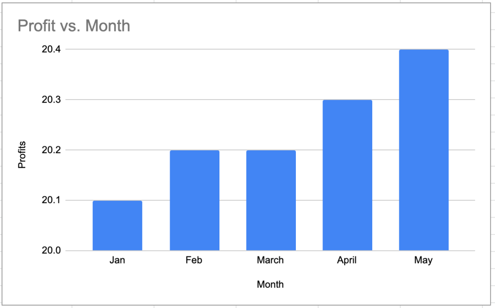
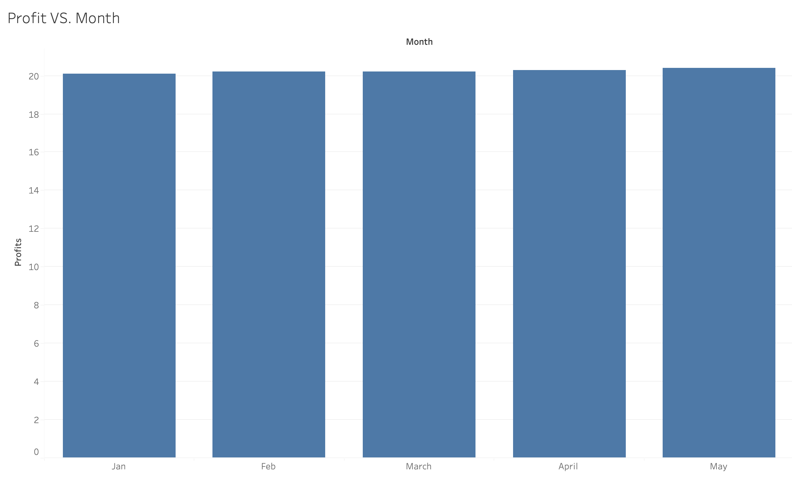
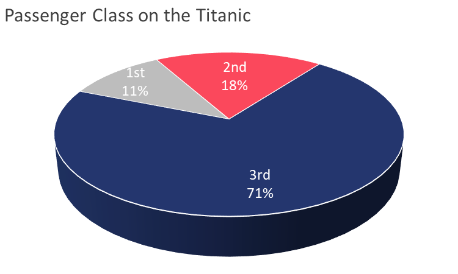

This visualization is misleading because the y-axis starts at 20.0 instead of 0, which exaggerates the differences between the profit values. Visually, it makes it seem like there is a large jump in profits from month to month, when in reality, the changes are very small. Below the misleading chart is the white hat version of the chart, which starts at 0 and accurately represents the data, its made in tableau.
 I chose this visualization after reading the FDV 3D chapters, and the chapter was talking about how some 3D visuals can be misleading. This visualization is misleading because it uses a 3D pie chart, which can make it difficult to accurately compare the sizes of the slices. The 3D effect can distort the perception of the data, making it hard to see the true proportions of each slice. I made a 2D viersion of the chart in 2D which is much easier to read and interpret the size and proportions.
The misleading chart I made was a multiline chart with a log scale on the y-axis. This is misleading because when looking at the chart, the lines are not accurately representing the data where they visually seem closer to each other than they actually are. Then I created the chart with just a linear scale on the y-axis, which shows the clear differences visually which it did not before.